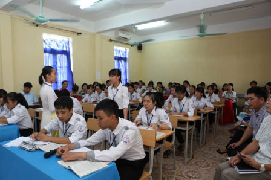
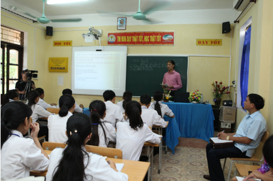

Hội thảo môn Ngữ Văn cấp cụm huyện Duy Tiên
Thực hiện công văn số 1265/SGDĐT-GDTrH ngày 24/8/2016 của Sở Giáo dục và Đào tạo Hà Nam về việc hướng dẫn triển khai một số hoạt động môn Ngữ văn năm học 2016 -2017.
Ngày 16 tháng 9 năm 2016 Cụm trường THPT huyện Duy Tiên tổ chức Hội thảo cấp cụm trường về đổi mới phương pháp dạy học môn Ngữ văn
1. Thông qua buổi hội thảo giáo viên Ngữ văn các trường THPT trong huyện có điều kiện giao lưu, học hỏi, chia sẻ kinh nghiệm dạy học nhằm triển khai có hiệu quả Xây dựng kế hoạch bài học (giáo án) được thiết kế thành các hoạt động theo tiến trình sư phạm của các phương pháp dạy học tích cực.
2. Vận dụng kết hợp các phương pháp dạy học truyền thống và các phương pháp, kĩ thuật dạy học mới vào bài dạy một cách phù hợp, hiệu quả, linh hoạt.
3. Thực hiện nghiêm túc việc xây dựng đề thi, kiểm tra đánh giá theo ma trận đề, tăng cường ra đề theo các câu hỏi mở.
Một số hình ảnh trong buổi hội thảo
